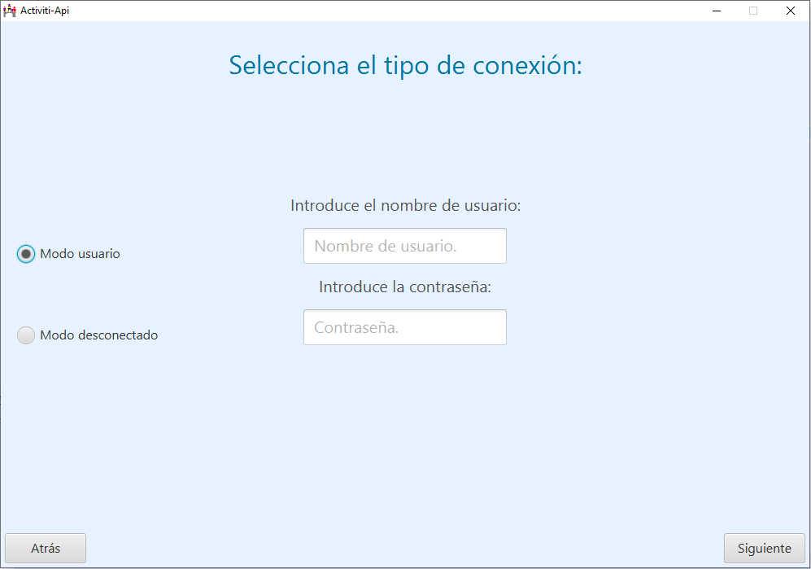

En esta apantalla aparecen dos RadioButton, dependiendo de la conexión que se desee, se selecciona uno u otro. La conexión como usuario habilita dos campos de texto para introducir un usuario y su contraseña correspondiente, que se encuentre ya registrado en la plataforma seleccionada.
Aparecen también dos botones:
- Siguiente: autentifica el usuario introducido mediante la contraseña suministrada en la
plataforma seleccionada para trabajar o como modo desconectado.
- Atrás: vuelve a la pantalla anterior.
